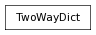

A dictionary that can also map in reverse: value to key.
>>> twd = TwoWayDict( {3:'foobar'} )
>>> twd[3]
'foobar'
>>> twd.get_key('foobar')
3
Entries in both sets (keys and values) must be unique within that set, but not necessarily across the two sets - ie, you may have 12 as both a key and a value, but you may not have two keys which both map to 12 (or, as with a regular dict, two key entries for 12).
If a key is updated to a new value, get_key for the old value will raise a KeyError:
>>> twd = TwoWayDict( {3:'old'} )
>>> twd[3] = 'new'
>>> twd[3]
'new'
>>> twd.get_key('new')
3
>>> twd.get_key('old')
Traceback (most recent call last):
...
KeyError: 'old'
Similarly, if a key is updated to an already-existing value, then the old key will be removed from the dictionary!
>>> twd = TwoWayDict( {'oldKey':'aValue'} )
>>> twd['newKey'] = 'aValue'
>>> twd['newKey']
'aValue'
>>> twd.get_key('aValue')
'newKey'
>>> twd['oldKey']
Traceback (most recent call last):
...
KeyError: 'oldKey'
If a group of values is fed to the TwoWayDict (either on initialization, or through ‘update’, etc) that is not consistent with these conditions, then the resulting dictionary is indeterminate; however, it is guaranteed to be a valid/ uncorrupted TwoWayDict. (This is similar to how dict will allow, for instance, {1:’foo’, 1:’bar’}).
>>> twd = TwoWayDict( {1:'foo', 1:'bar'} )
>>> # Is twd[1] 'foo' or 'bar'?? Nobody knows!
>>> # ...however, one of these is guaranteed to raise an error...
>>> twd.get_key('foo') + twd.get_key('bar')
Traceback (most recent call last):
...
KeyError: (either 'bar' or 'foo')
>>> twd = TwoWayDict( {1:'foo', 2:'foo'} )
>>> # Is twd.get_key('foo') 1 or 2? Nobody knows!
>>> # ...however, one of these is guaranteed to raise an error...
>>> twd[1] + twd[2]
Traceback (most recent call last):
...
KeyError: (either 1 or 2)
Obviously, such shenannigans should be avoided - at some point in the future, this may cause an error to be raised...